সুরের জাদুতে আপনার অনুষ্ঠানে প্রাণের ছোয়া
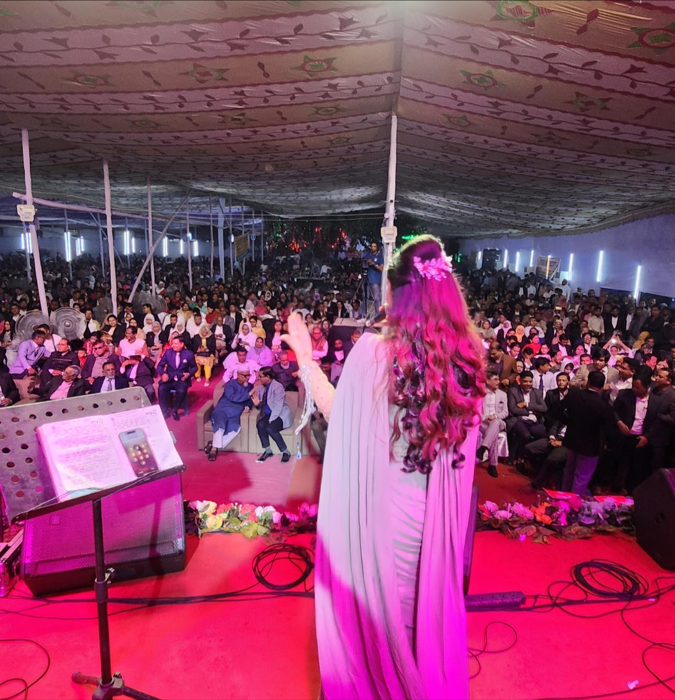
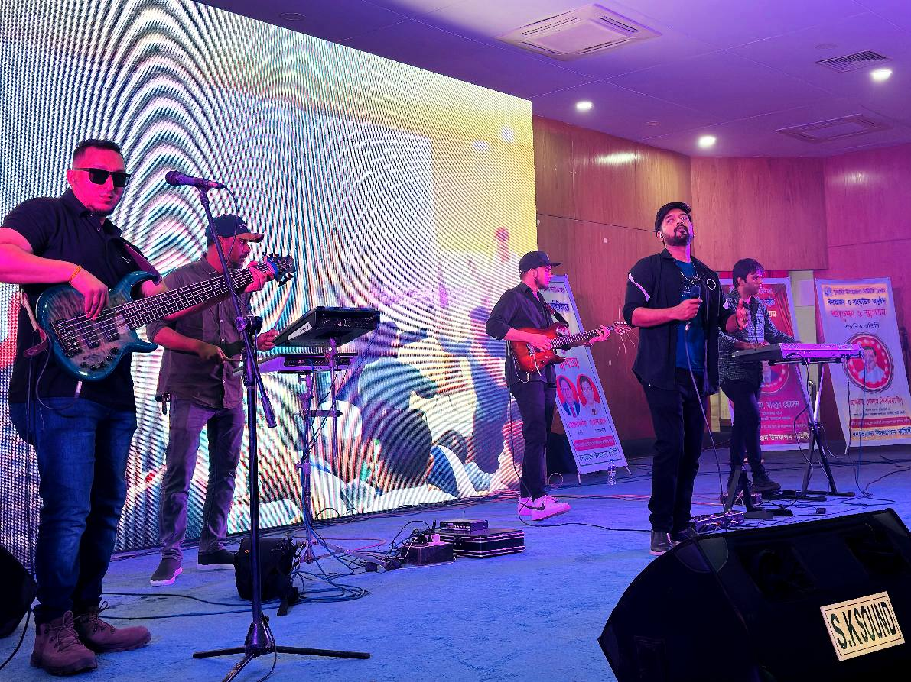
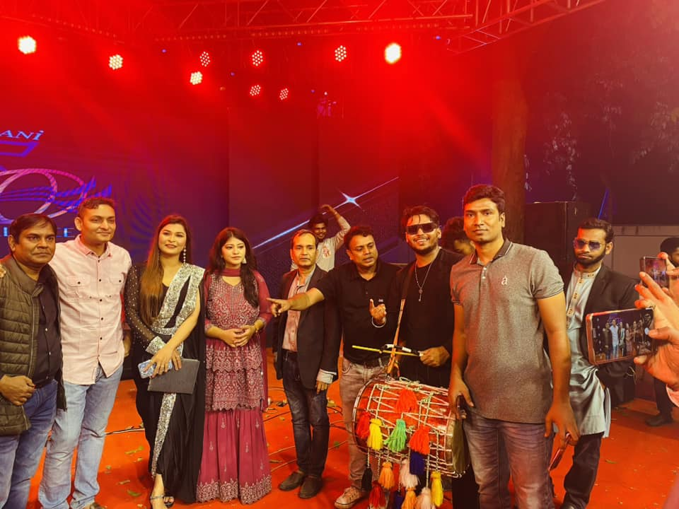
তারার মেলা শিল্পী সংঘ হলো একদল সঙ্গীত প্রেমী শিল্পীর সংগঠন, যারা
সুরের মাধ্য মে আনন্দ ছড়িয়ে দিতে বিশ্বাসী। আধুনিক গান থেকে শুরু করে
লোকজ সুর — আমরা পরিবেশন করি এমন সঙ্গীত যা ছুঁয়ে যায় শ্রোতার মন
আমাদের দল বাংলাদেশের বিভিন্ন প্রা ন্তে এবং দেশের বাইরে অসংখ্য
অনুষ্ঠানে পারফর্ম করেছে। আমরা প্রতিটি অনুষ্ঠানে নিয়ে আসি
পেশাদারিত্ব, আবেগ এবং সঙ্গীতের প্রাণ।
দেখে নিন আমাদের বিভিন্ন অনুষ্ঠান, কনসার্ট ও রিহার্সালের ঝলক প্রতিটি ছবিতে আছে সুর, আনন্দ ও ভালোবাসার গল্প


 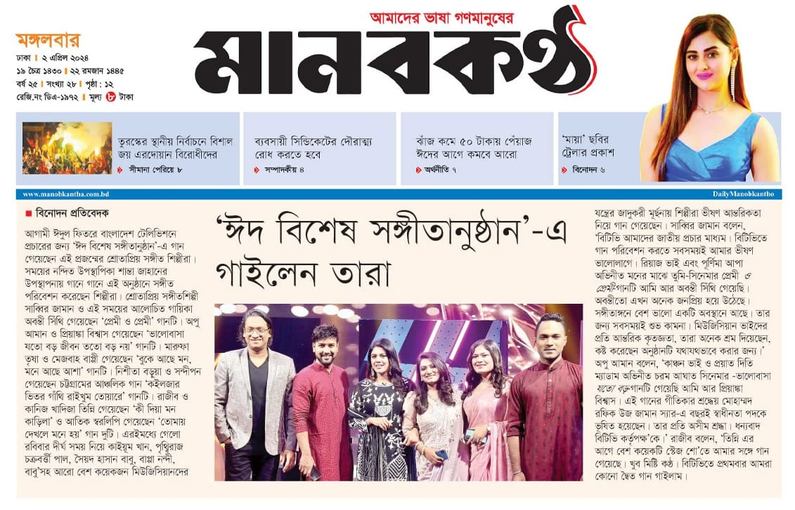
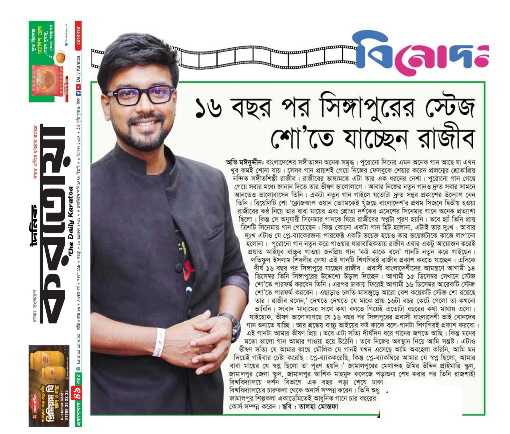
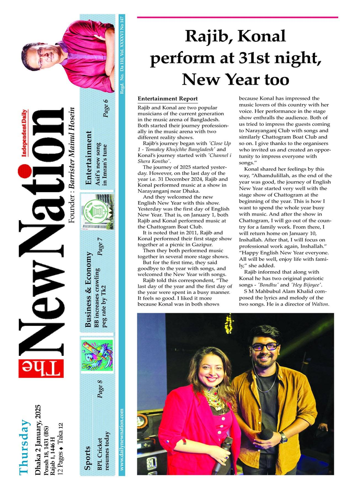
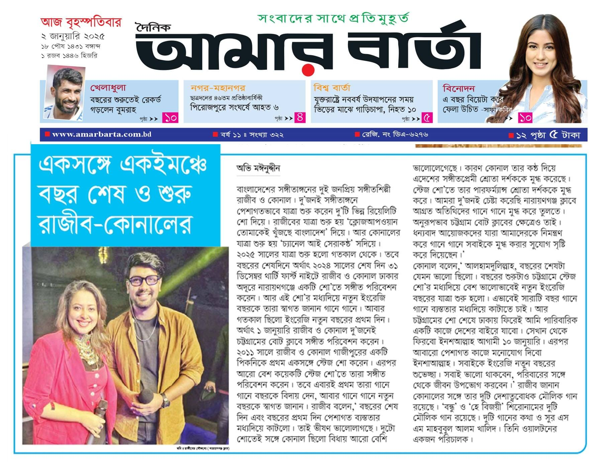
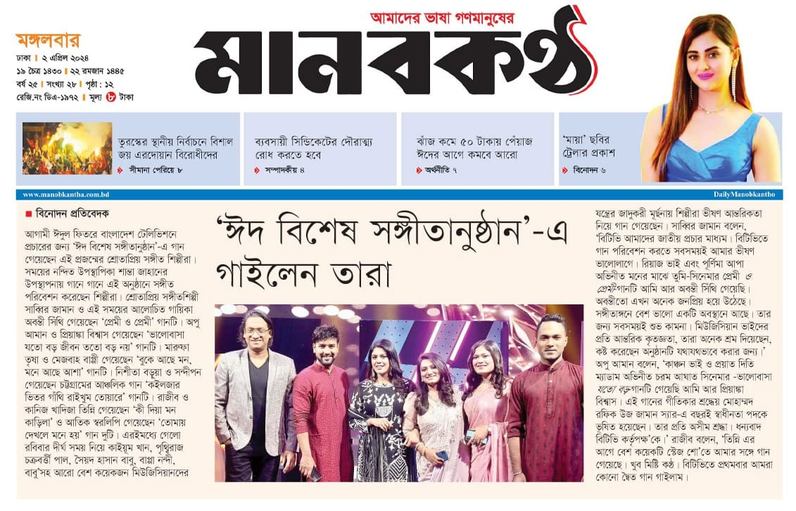
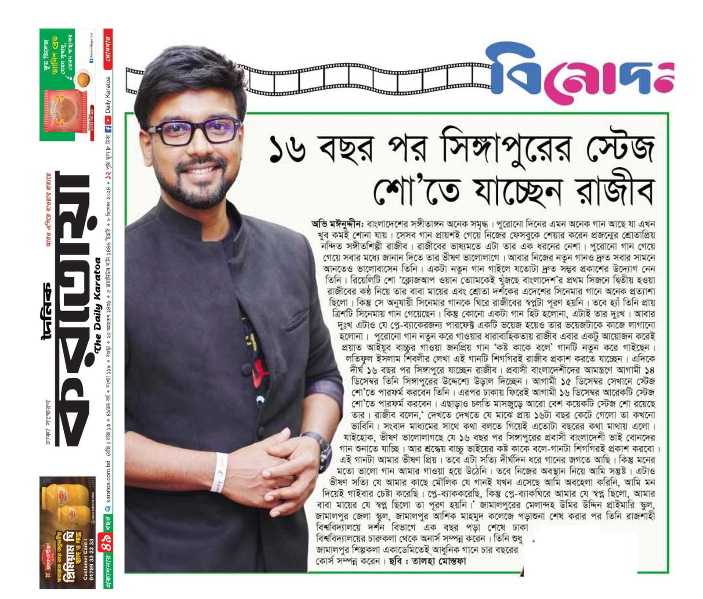
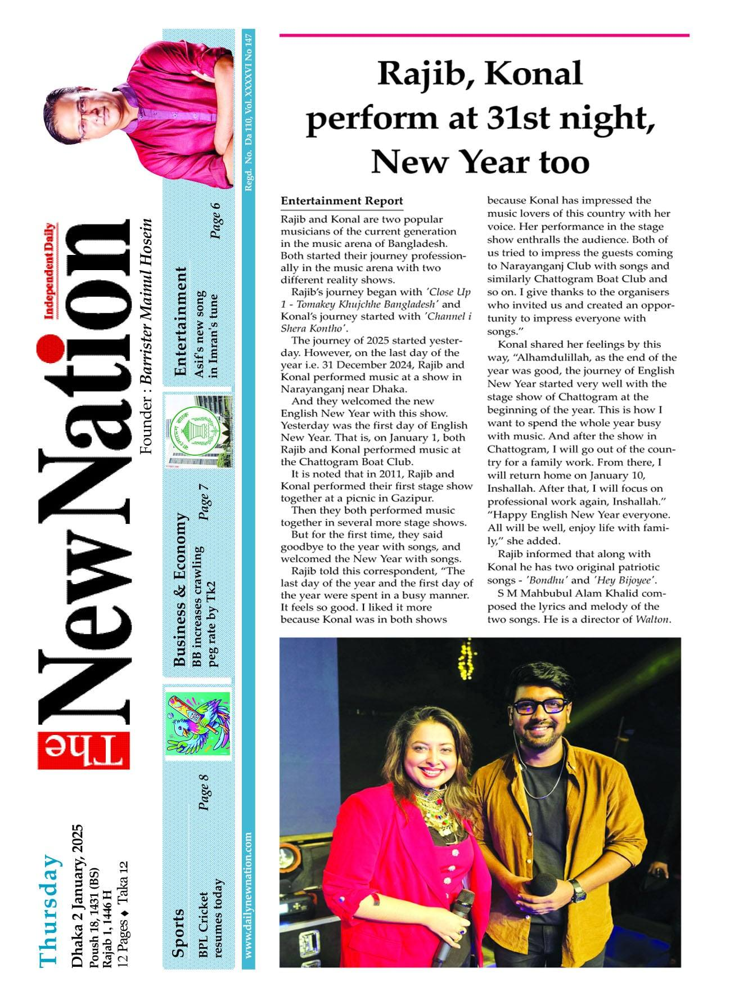
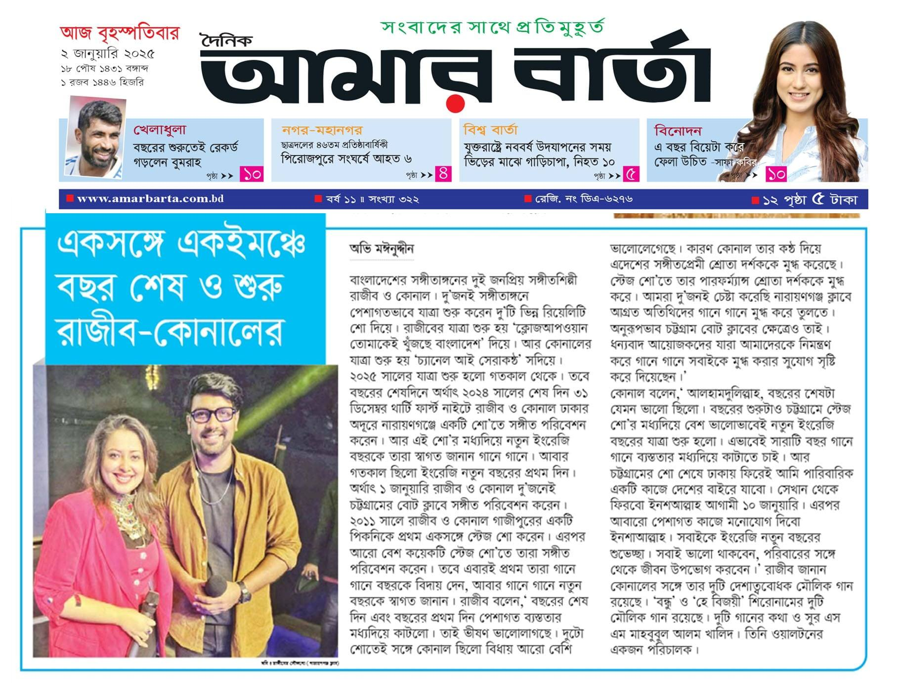
"তাদের পরিবেশনা আমাদের বিয়ের অনুষ্ঠানে একেবারে অন্যরকম আমেজ এনে দিয়েছিল সবাই মুগ্ধ!"
"কর্পোরেট দিনের তারার মেলা ব্যান্ড পারফর্ম করেছিল — পেশাদারিত্ব ও সাউন্ড কোয়ালিটি অসাধারণ!"
"আমাদের কলেজ রিইউনিয়নে তাদের পারফর্মেন্স ছিল সবচেয়ে আনন্দের মুহূর্ত একদম পারফেক্ট!"
"লোকজ গানগুলোর উপস্থাপনা এত সুন্দর ছিল যে সবাই নাচতে বাধ্য হলো! সত্যিই প্রাণবন্ত দল"
"তাদের নারী কণ্ঠশিল্পী গলা অসাধারণ! মন ছুঁয়ে যায় ভবিষ্যতে আবার বুক করব ইনশাআল্লাহ।"
"স্টেজ পারফর্মেন্স, আলো আর সাউন্ড সবকিছুই একদম নিখুঁত ছিল খুবই পেশাদার দল।"